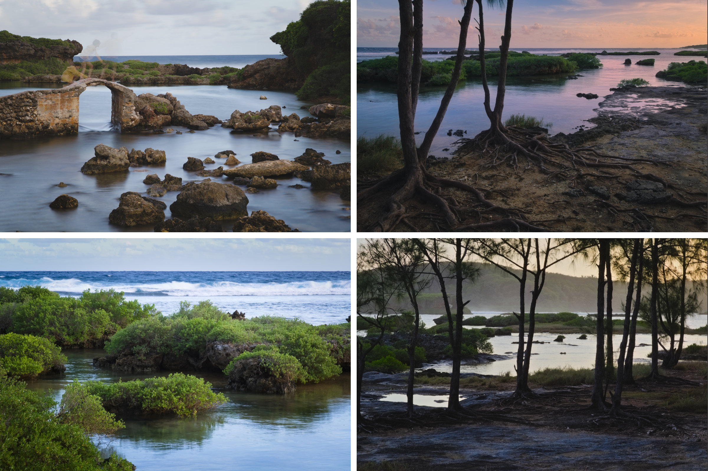

当阳光被月球遮挡投下的影子扫过地球时，站在影子下方的人们将能观赏到日食现象。倘若位置和时间恰到好处，就能看到重合的月亮与太阳组成的金轮。这便是日环食。
2019年12月26日发生的这场日食，其本影穿过印度洋和太平洋，扫过阿拉伯半岛、印度与斯里兰卡、印尼、马拉西亚，擦过新加坡和菲律宾的边，穿过关岛与北马里亚纳群岛，终于西太平洋洋面。只有位于这窄窄一条环食带上的观众，才有幸见到日环食的全貌。
距离2008年刚考上高中的我随着天文社参与了第一场活动以来，已经十一年了。时光飞逝，我已身处大洋彼岸。虽仍能见到一些同在异乡的昔日伙伴，但终免不了盛宴已过的寂寞。往事终究已是往事，再怎么渴望，时间也绝不会逆转。因此，当我得知林老师在发起天文社的“老人们”组团（在校社员要上课）时，我是超开心的。
观测计划在众人断断续续的讨论中慢慢成型。综合了各式各样的因素，我们最终选择了关岛。孤悬太平洋深处的关岛恰好位于环食观测带的中心线上，这等巧合实乃罕见，其观赏效果也远胜于仅仅擦过环食带边缘的诸多地区。处于环食带末端的位置也让我们有机会见到缺蚀尚未完全复原的太阳落入西海。天气和安全方面也相对较优。对我而言唯一的缺点是，尽管行政上位于美国领土，从美国本土前去关岛远远比从国内出发要繁琐而昂贵。
最终定下的远征成员一共有八个人。就旅行而言这人数已不算少，然而和天文社昔日旌旗蔽空的出游队伍相比，实在有些寒碜。毕竟自由的学生时代都已远去，能再度相聚已实属不易。队伍的成员如下：杭高天文社的坐镇领袖林岚老师和田蕾老师、居于日本的正牌天文学家杨毅博士(08届社长)【YY】、同时代的张奇漪学姐（08届副社长）【71】和阙雯雯学姐（06届社长）【阙姐】、与我同届的大老板张俊程（11届）【瓢虫】、毕业多年但遗憾依然是队伍里最小的林逸超（13届副社长）学妹学弟【黛玉】、以及我自己。
12月24日：集结
从加州到关岛的常规的行程是先飞抵檀香山，过一夜第二天再飞关岛。为了节约下转机浪费的几乎一整天，我选择在夏威夷群岛内多一道转机，把两趟航程并在了同一天。也拜此所赐，得以在飞机上见了一眼天文学的圣地，夏威夷岛的莫纳克亚山。至于回程，我还是遵循常规的过夜转机方案，并打算利用一个上午的空余参观一下珍珠港。
漫长的飞行令人疲惫，期间还经历了不少混乱。不过不管怎么说，当地时间24日晚上8点，顺利抵达了关岛。大约是从美国本土前来的游客实在太稀少，境内和境外旅客一律需要排队过边检。当我告知边检官员自己是来看日环食的，对方不无惊讶问道“你就为了看个日环食从加州飞到关岛？” 嗯…在正常人眼里好像确实有点疯狂。通过边检和海关，在机场等候其他人抵达。我们8个人一共分成四批抵达。YY在我前一天从日本飞抵，此时此刻正在超市为我们采购一些基本的食物和用品。两位老师、71、瓢虫和黛玉晚我一个小时经韩国飞抵，因此我就在机场和他们会合。阙姐则要次日晚上才到。关岛是美国领土，但周围的环境更像是日本和韩国。不管是手机运营商还是银行都和美国完全不同，也不通Uber/Lyft。所幸机场有卖当地的临时sim卡，美国的信用卡也使用无阻。
晚上10点，和众人会合，提了预租的车前往住处——Airbnb上订的民宿。YY因为提前于我们一天抵达，另行订了一家旅店不和我们同住，此时帮我们提前开了民宿的门等我们抵达。因为车子容量限制，分两趟接送。民宿离机场不太远，但是位置偏僻。Google Map一度把我们导入了死胡同，最后靠着我和黛玉的人肉导航找到了正确的路线。接了人，在民宿附近的加油站买了一些吃的喝的，今天的主要任务就算结束了。民宿有三间大房间，最后决定女生分一间最大的房间，男生分两间稍小一点的房间，事就那么成了。
半夜瓢虫、黛玉和我溜到外面吃了一顿Denny’s。Denny’s 24时营业，主营牛排、汉堡等各式西餐。几年前我和黛玉等天文社旧友在美国自驾巡游国家公园，曾因天色已晚而满城找不到吃的，最后被Denny’s救了一命。这件事很快成了一个梗，结果我们之后每到一个城市都要找当地的Denny’s来吃。日后和别人一起出去观星时，我也开始给其他人安利“天文活动要吃Denny’s”这个有趣的传统。
多年不见，大家还是老样子。
12月25日：寻找观测点
可能是因为时差的关系，虽然前一天闹到凌晨两点才睡下，今天六点就彻底醒来了。晚上睡得不太好，不过多少还是恢复了精神。喉咙感到很痛，不知道是否是水土不服。其他人都还睡着，天色也才蒙蒙亮，我便趁机趴在床上写前一天的活动记录。完成后，开始调查关岛合适的观测地点，顺便了解一下观光的景点。
人类在千年以前就已经掌握了预测日食的技术，今天借助星历和天文模拟软件，任何人都可以很轻易地得到日食极为准确的信息。给定一个地理位置，我们能精确知道日食在几时几分几秒发生，此时的太阳又处在天空的什么位置。譬如说，这次在关岛看见的日食发生在26日下午。初亏的时间是15点33分。食甚的时间是16点55分，在角西偏南29度，高度角13度的位置。在太阳复圆、日食完全结束前，会首先落入西海，这也被称为“带食日落”。在天文摄影的诸多领域中，我主耕的方向是“天文风景”，即重点将星空/天文现象和地球风景结合的拍摄方式，一个合适的观测地点是极为重要的。就算是其他的拍摄领域，如利用望远镜，拍摄和观测特写的日食，或者干脆只是简简单单的肉眼观看，观测地点的选择也不能马虎。最基本的，朝向届时太阳所在位置的方向必须是空旷没有遮挡的。若是想拍摄地景，那当地的风景也必须足够漂亮并适合和太阳一起构图。此外，也要考虑交通是否便利，届时是否会有人群以及可能带来的影响。
调查工作一直持续到8点其他人开始陆陆续续起床为止。吃了昨日剩下的Denny’s三明治。林老师和71则煎了香肠与鸡蛋作早饭。YY昨天买的食物里还有一盒椰子杏仁奶，味道挺奇怪的。
我和林老师一起去门口看了天气。湛蓝的海岛天空下面散着许多积云。真是微妙的天气。积云点缀的天空很适合拍照，但如果日食时一朵云正好扣在太阳上，那一切都完了。“人品鉴定云”不是白叫的。08年的日全食时的积云至今还给我留着心理阴影，可谓风险和潜在的收益都非常大。
因为租来的车子只能载五个人，第二辆车要等明天才能取，71和yy惨遭抛下只能在城里逛街，剩下的人出发环岛。事先调查的时候发现关岛的大部分景点都集中在西岸，东岸的景点寥寥无几，而我们所在Tamuning市则在关岛的西北边。我的计划是先北上去看一眼关岛的最北端，然后沿着西海岸一路向下。
由瓢虫担任司机，我们出发向北行驶。道路两旁的景观很快就由城市建筑变成了野生的树林。这些都是完全未经开发的土地，在平日生活中是难得一见的。途中还路过了一个海军雷达基地，天线阵列十分壮观。在北点附近我们被路障拦住了，大约圣诞节并不开放。因为这里主要属于打卡性质，并不重要，我们也没什么失望，就地掉头。
原本的打算是原路返回Tamuning正式开始沿着西线探索，不过在林老师的要求下我们稍稍绕远，顺时针绕了关岛北部一圈才返回城里。关岛北部没什么观光的项目，只是稀稀拉拉分布着一些简陋的民居，也许是当地原住民的住宅。林老师不停念叨着想要找户人家进去看看，被我吐槽说听着像RPG游戏里进别人家翻宝箱似的。我看着那些外挂着空调交换机的水泥房子，心里很怀疑在这个被殖民了300多年的这么小的小岛上，原住民还能保留多少原始社会的传统。
西线的第一站是被各大关岛旅游指南名列榜首的情人岬——Two Lover’s Point。巨大的情侣雕像，换汤不换药的原住民和殖民者相爱的老掉牙的故事，建在据说是故事中殉情悬崖上的观景塔，挂满栏杆的情人锁，以及售票处。我看着那些写满海誓山盟但已经被腐蚀掉一层的泡沫塑料片，不禁祈祷他们的主人拿来盛放真诚爱心的容器比装甜言蜜语的更可靠一些。
这不是个看日食的好地方。太过吵闹、太过拥挤。我们票也懒得买，在外围象征性地看看算数。附近一间造在高处的露天餐厅，其上可以俯瞰下方。海岸十分漂亮，连接着深蓝海面与金黄的沙滩间的是清澈水面下深浅不一的珊瑚礁石。林老师从地上找到几块白色的碎石，给我们展示了这座岛屿是由珊瑚礁构成的证据。有地理老师陪同旅游真是太方便了。
随后我们沿着西边的海岸公路一路往下，直至到了关岛中部离开沿岸公路转而向山上驶去。我选择这样的路线是因为山上保留了一些西班牙时期的炮台遗址。关岛在16世纪由麦哲伦发现，之后被西班牙人占领并殖民。19世纪末，美国在和西班牙的战争期间占领了此处，并在战后取得了关岛的所有权。1941年末，日本在珍珠港袭击的几天后攻下了关岛。直到1944年，重新掌握了制海权的美国才将关岛夺回。除了遗址外，山上也有更好的视野，既是观赏日食的候选地点，也是俯瞰海岛风景的好去处。
Fort Santa Agueda 是我们遇到的第一处历史景点。这里最初是西班牙人在19世纪初建造的一座小型堡垒，用来炮击登陆的敌军。随着军事科技的进步，这处堡垒不再适合于防御用途，而被改造为军火仓库。虽然关岛几经易手，这里直到二战结束前都一直被西班牙、美国和日本的军队使用着。炮台上堆放了四门已经锈迹斑斑从炮座上脱落下来的古老前装加农炮。火炮的侧后方雕着旧时西班牙帝国的皇室纹章。事后我顺着火炮的外形和那枚纹章做了一番调查。看起来这些火炮并非当时遗留下来的古物，而是后世的复制品。那枚漂亮的纹章代表的年代是在16到17世纪哈布斯堡王朝统治下的西班牙，远远早于这座堡垒建立的年代。
从 Fort Santa Agueda 继续南下，驶上以美国太平洋舰队总司令命名的尼米兹丘(Nimitz Hill)。这座平缓的山丘向北一路延伸到海边的沙滩。这处沙滩名为Asan Beach，是1944美国从日本手中夺回关岛作战的两处登陆战场之一，今天已经被改造为一个纪念公园。我们站在尼米兹丘山顶的 Asan Bay Overlook，能够清楚地俯视下方的战场海滩。此外，这儿还有一座纪念太平洋战争期间牺牲于关岛的军士的纪念碑。
站在观景台四处瞭望，我们的右手边是有着巨大的月牙形珊瑚礁的Agana Bay，环绕着它的是Tamuning市的南端，整个关岛的城市区域都集中在这一带。更远处海天相接的地方还能看到关岛最北端的海岸悬崖。在我们的左手边，是关岛的深水海港Apra Harbor，在地图上看起来宛如一只大钳子，非常有特色。海港的南岸归属于美国海军，其最尖端亦是整个关岛的最西端。北面是商业港，由原来的一座小岛人工填海扩张成现在的长条状。除了商业港外，北岸的海滩也开发了许多娱乐区域。这里也是事先计划的重要的日食观测候选地。这儿也是我们环岛的下一站。
开车下山前往港口的北臂考察，中间在海港区前下车赏景并略作休息。到目前为止天气似乎还不错，届时看到太阳的几率并不低。但为了避免立起flag，大家还是尽量避免做出太乐观的发言。大概是圣诞节的关系，海港空空荡荡仿佛废弃了一般。我很喜欢这种残败的美感。右侧又是一大片浅礁，不知为何中间像是被凿出一道沟渠般，颜色要更深更绿。
越往深处，道路越窄路况越差。其中一段路上遍布碎坑，地面碰到车壳发出心惊胆战的刮擦声。所幸，司机瓢虫同志技术过硬，一通操作顺利穿过了这片区域。最后我们在一道铁门前停了下来，这里深入海港北臂大约2/3的地方，已经足够深入了。路边是一处相当漂亮的海滩，黛玉一下车就赶紧下去玩了一把。开了一上午的车，这下才是第一次真正站到了海边。我借着手机的电子罗盘比划了一下方位。日食时太阳下方正好是海港南岸的末端，有一座铁塔。美中不足的是这段地景实在没什么特色，而且海天间的一长条海岸，在日环食的广角构图中显得太过细小。称得上是合格的观测拍摄点，但也只是合格。黛玉和林老师似乎也很喜欢这里。远离人群无人打搅，车子就在旁边供电也方便，对于要架设望远镜的黛玉而言是再好不过的了。空余时间还能下沙滩玩玩水。于是，这个地方被正式列入正式的候选点，林老师称之为“一号”。
我的视线越过港口南岸，看到了远处连绵的山脉。早上的调查已经让我对关岛的地理状况有了基本的了解，知道关岛的南部基本由低矮的群山组成。在我的设想中，最完美的风景当是从山顶俯瞰山林与海岸，而顶上是白云与树枝剪影簇拥的一轮环日。如果这样的景色真的存在，那一定是在眼前的这片山脉之中。接下来道路会带着我们穿越群山，我调查到有几个已知的观景台。我把希望赌给它们。
完成了北岸的探索，驱车前往南岸。之前有提到过，港口南岸的末端即是关岛的最西端（从美国本土看起来也是美国领土的最西端）。那个端点被称为Point Udall，附近还有几处海滩和历史景点。意料之外的是，我们刚在前往海港南臂和南下关岛的分叉转弯，就被一处哨卡拦住了，有军人检查证件。我们前方的几辆车辆出示了一下证件就立刻被放行了，我们以为我们也行。但显然事情没这么顺利。兵哥哥看到了我们的中国护照后显然陷入了困惑，在和同行交头接耳了一阵后，示意我们让开道路停靠路边待命，还给我们车头加了个交通锥以防闯关。然后收走了我们所有人的护照 Σ( ° △ °)。

我们陷入了进退两难的尴尬境地。哨卡的两位兵哥哥只管继续检查放行其余的车辆，完全没有要给我们更新进展的意思，想来是请示了上级还没等到回复。这也显示出这里中国游客之少。或者至少说旅行团和自驾游都不会想着来这种偏僻的小众景点。确实，从昨天到今天的游览印象中，见到的关岛的游客至少九成来自于韩国。别说中国人，连日本人都见不到。关岛南岸有军事基地这件事我是知道的，因为军事区的缘故进不去的可能性也是想过的，但确实完全没料到会在看起来人畜无害的大路上这么早被卡。本来觉得最多就是开到某条小路看到铁丝网大门掉头就好。真是失策。
脑中回想起当年在酒泉航天城见到的“泄密必被抓，抓住就杀头”的标牌，心里七上八下的。林老师等着不耐烦说想去和大兵们理论，赶紧被吓尿了的我们劝了下来。虽然林老师曾经用着神之口才带着我们走南闯北，解决了无数困难，但这里毕竟是美国的军事哨站，我等还是能多安分就多安分，能多温顺就多温顺，才能把可能的麻烦减到最少。心情紧张地空等了十几二十分钟，终于等来了兵哥哥的最终回复——不能放我们过去。至少他们没打算不让我们回去。兵哥哥指示我们原地掉头，等我们的车头完全转到了对面的哨卡，无论怎么样也作不动死了，兵哥哥才把护照还给了我们并给我们升起了路障。我们赶紧溜之大吉。
绕过海港向南进发，在 Apaca Point Park 作短暂停留。这儿也是一处历史地点。据说当年日军在这里布置了相当的防御工事，因此在美军反攻时特意避开了此处。在这儿我们只是简单地考察了一下方位和景色，没多做停留。在沙滩上见到了一只小寄居蟹爬过。林老师还找到一大块珊瑚石。此时已经是下午两点，大家都饿了，就在前面不远处的小镇找了一家subway解决中饭。
下午已经过半，我们还只绕了岛屿的1/3左右。感到时间不够的我决定加快速度。路上之前勾上的几个不太抱希望的海滩在外面看了看觉得没什么希望的就立刻跳过，直接奔向山上。越过关岛最高点闪电山，接近了我预先找到了两处观景台：分别是 Sella Bay Overlook 和 Cetti Bay Overlook。这两处观景台所在的下山方向正好是西南方，作为日食候选点十分有希望。但无论如何，实地考察是很重要的。
结果，第一个点不符合要求。俯瞰海岛山林的景色十分漂亮，然而被树林环绕的开口方向离届时太阳所在的位置差了30度，十分遗憾。而且从停车的地方到观景台需要爬相当长一段阶梯，对带着设备的我们并不方便。此外，我们回车时才发现这个被树林环绕的停车场漫天都是蚊子。每个人都被咬了一身包，还让不少蚊子溜进了车里。
一边手忙脚乱驶离这个是非之地，一边在车内开启了蚊子大屠杀模式。几分钟后，心有余悸的我们开始清理起满玻璃窗浸着自己鲜血的蚊子尸体。这个观测点是绝对不能用了。第二个山景点—— Cetti Bay Overlook ——在1.5公里开外，一下就到了。观景台比路边高上两米，只有一个台阶入口。从停在路边的车子数量来看，这似乎是个热门景点。我满怀好奇地率先走上高台来到栏杆旁，只一下就被眼前的景色迷住了。
身下俯瞰着的是起起伏伏的山丘，被茂密的丛林或是草原覆盖。我看到正前方那座山谷的谷底生长着许多椰子树，想必那里定有一条河流来滋养这片椰林。这条不可视的河流的终点是一个形状堪称教科书般完美的弯月海湾。下午的太阳懒懒地在这处海湾的上空照耀，周边点缀着一朵朵形态各异的细碎积云。我被这极尽自然之美的世界深深地感动了，当即决定自己要在这个比幻想中更美丽的景色前观测明天的日食。
其他人也陆陆续续登上了观景台。这里游客很多，清一色的韩国人，完全见不着中国人和日本人的影子。后来才想明白，这是因为中日韩三国只有韩国把圣诞节作为法定假日。我有点担心明天日食的当口这儿会人满为患。但是对着这样的美景，这些可以克服的小困难并不是什么问题。就这样，“二号”日食观测候选点也登记在册了。
前方还有几处景点，而时间所剩不多必须加快速度。公路引着我们下了山，驶入一个环抱海湾小镇。这个海湾叫做 Umatac Bay， 这里是关岛非常有纪念意义的一个地方。传统上认为，500年前航海家麦哲伦的船队，便是在这里停泊靠岸，成了第一批登上关岛的文明人。今天，这处海湾的岸上立了一座四棱锥形的白色纪念碑。我们简单称呼这儿为“麦哲伦海湾”。
踏上海滩，我们看到不远处立着几只三脚架，上面驮着望远镜和星野赤道仪。这显然是天文爱好者的装备。我们上前和调试设备的一男一女攀谈，得知他们是日本的爱好者，在这里做观测日食的预先准备。
这地方用来拍摄日食是不错，但相较于山顶的景色而言还是逊色了一些。然而林老师喜欢得不得了，比起视觉上的盛景，她更看重这里的历史意义。就这样，我们找到了第三个候选的观测点。
麦哲伦海湾的南岸是悬崖，上面建有一座西班牙要塞。要塞名为Nuestra Señora de la Soledad，意为“孤独圣母”(Our Lady of Solitude)。相比此前参观的寒碜小碉堡，这个占据了整座山头的要塞要气派得多了。两个世纪前，它肩负着拱卫身下港口海湾的职责。彼时，西班牙的商船队每年两次往返于菲律宾和墨西哥，将大量购自中国的商品运往美洲殖民地。关岛是当时太平洋航线上的重要补给港口。然而，随着墨西哥独立战争的爆发，昔日千帆破浪的雄伟场面再也不复存在，失去了守护对象的要塞也日益残败。今天的要塞只留下临海尖端的些许残垣，其余地方已被改造成了供游客信步玩耍的草坪。四门火炮面朝大海，追忆着此处曾有的威武繁华。
日暮西斜，阳光显得十分柔和。在给田老师拍照时意外发现了一个很棒的拍人像的角度，于是大家喊着“教练我要拍这个！”纷纷留影纪念。返回车上的途中我发现一棵粗壮的松树，连同背后的草地在金黄的阳光中仿佛是奇幻世界的山野，十分梦幻。于是和黛玉试着拗了几个造型。
距离日落大约还有一个小时的时间。关岛西侧的景点已全部调查完毕。东线还有一些零星的地标是一定没有时间在天黑前看完了，不过那些地标本来也只是早上嫌东边地图上太空硬是找出来的，可有可无。因为日食西南，东边也不太可能有适合日食的角度。我内心希望今天日落的时候能待在之前中意的 Cetti Bay 观景台上观看。那里的黄昏一定非常美丽，我不想错过。不过林老师似乎无论如何也想去前面再看看。
我研究了一下地图，提出了一个折中方案。东线唯一让我有些在意的景点恰好也是当前离我们最近的。开车一来一回差不多刚好用时一个钟头。于是我们可以到那里去一探究竟，再折返回来看日落，随后原路返回回住处吃晚饭。71和YY被我们鸽了一天，太晚回去的话不太好意思。这个计划得到了赞同。
顺着公路向前飞驰。经过了关岛的最南端时，我开玩笑说好望角到了。这一带海滨似乎耸立着许多漂亮的礁石，如果不是正处于赶路模式，我是一定想下去看看的。可惜不断西沉的太阳打消了这个念头，催促自己专心赶路。
最后一个景点在地图上标记为 Inarajan Natural Pool，位于关岛的东南边的一个小镇的附近。此前在网上搜索的时候，只因看到这里的照片里有个碧绿色的池子而随手把它标记上了。实际见到后，不禁庆幸自己这个无心之举。这个池子原本应是海的一部分，但不知什么原因被一块隆起的小土丘和周边的礁石分隔了开来。也不知是谁的主意，利用了这个奇妙地形建造了一个小小的园林。一座小石桥从此岸出发，却不通到对岸的土丘，中断在池中的一块礁石前。若想前去彼岸，非得小心翼翼踏着礁石前往，或干脆涉水而行。池水沉稳地流动着，近看仿佛是山间溪流。然而抬头一望，却能看见海浪一波接一波地拍打着作为池壁的礁石，激起让人胆战心惊的浪花。惊涛拍岸与小桥流水，就这样近在咫尺地结合在了一起，真是让人惊叹的反差。
往西走一点是一处海岸滩涂。几株树紧挨着海水盘根错节地生长在滩涂上。我还是第一次见到生得离海这么近的树林。十来米外的海面分布着许多的低矮的礁石，生满了灌木，和印象中海岸总是一幅光秃秃的荒芜形象真的非常不同。这就是热带地区的海岸呐。
从我们这个角度看不到太阳，但想必已经很低了。我很想在这儿多待多看一会儿。但是天空已经开始暗下去了。我们只好赶忙上车迅速往回赶，好能看到太阳落入西海的瞬间。

我们没能在日落时分赶到观景台，彼时我们刚刚抵达麦哲伦海湾。于是，我们就在这里停下欣赏日落。拍日落的时候我确认到，这里的确不太适合拍日食。若想要完整呈现这里的地面景观就非得上鱼眼镜头不可，但那样拍出来的太阳会非常小。我们没能见到太阳入海的刹那，低空的云层遮住了我们的视线。我向林老师建议现在立刻赶去Cetti观景台。虽然日落是没有了，但是日落后的黄昏依然会是一大胜景。林老师批准了计划。
日落后的天空迅速暗了下去。白天热闹的观景台晚上一个人也没有。若非特别的日子或者有旅行社的安排，一般的游客相比很少会有意识地去等日落。那些恰好在此时分来到这里的想必在日落后也纷纷各回各家找晚饭的馆子了，绝不会去想“日落后还有更美的晚霞余晖”这种事。
观景台此时昏暗得有些视线模糊。相反的，天空则如火光冲天般绚烂。玫瑰色的卷云如薄纱般抚过深蓝的天空，地平线上连绵群山般的灰色积云把背后的绯红天空反衬得更为辉煌。身下的密林山谷借着霞光仍能辨别一二，海面则是银色和粉色的奇妙交织。没有人不为这片景色着迷。
我们在这儿停留了很久——眺望、拍照、赞美，直到晚霞褪去，星星开始显露。关岛纬度不到北纬14度，对从没去过南半球的我来说这里是我到过的地球最南点。同时，在这里南天的星空要比平日生活中见到的星空要高上许多，也能看到南天原本见不到的部分。南方低空最亮的那一颗星，我本想当然地以为是北落师门，结果发现却是水委一——这是在北温带的我们见不到的一颗星。这令我们一行熟知星空的天文爱好者都认知混乱了。
我很想见识一下当昏影结束，星空完全显露时这儿的景色。但我们必须往回赶了。我们之前跟YY和71约了晚上一起吃饭，而现在已经是晚上七点了。那两人现在在家里大概很苦闷无聊吧。奔波了一天的我们也都很累了，晚上还有许多任务要完成。日食前夜还是不要太折腾的好。
瓢虫一边载着我们往回赶，一边还要处理一些工作事物。我一边帮他导航一边替他给下属发微信。当传话信使的感觉很新奇。路过一个大十字路口的时候，本该直行的我们不小心进了左转车道。定睛一看，左边正是下午闯进去的军事关卡。所幸机警的瓢虫赶紧U-turn掉头。连闯两次军事基地，这冤怕不是跳进太平洋也洗不清了。
圣诞节周围的大超市和饭店都已关门。不仅林老师想要亲自下厨的愿望破灭，连到底哪里还有地方可以吃饭都成了问题。所幸的是，前一天晚上购置物资的加油站超市还开着，隔壁还有一家营业的汉堡店。我们就决定在汉堡店将就一下解决今日份的晚饭。
一边吃饭，一边制定明天的计划。最重要的课题，是决定明天去哪看日食。今天一天的侦查找到了三个特别合适的地点。一是Apra Harbor北岸深处的海滩旁。二是Cetti Bay Overlook观景台，三是麦哲伦海湾。黛玉力主第一个点，因为那里从车上为望远镜供电方便；我力主第二个点，因为那里风景绝伦；林老师则力推第三个点，因为那里有历史意义。因为很显然谁也没法说服谁，我们很快就做出了大人的选择——我们全都要：每个人前往自己中意的地点。
队伍打散固然有交通和联系不便的问题，但好处也是显而易见的。有着不同拍摄项目的人可以各自选择能发挥优势的地点，不用委曲求全。作为团队也可以得到更多样化的成功。另外，有鉴于天文观测总是有天气这个全靠人品的因素，分散队伍也能尽量避免因为一朵恰到好处经过太阳的小白云而全军覆没的情况。接下来也讨论了一些实施细则。有三组人，而我们只有两辆车（明天阙姐会去租第二辆）。事前如何运送，事后如何集合，出发的时间，没有手机信号的对策等等，这些都是需要定下来的内容。
回到住处，开始做准备。黛玉要对望远镜和赤道仪做检查，还要确认车子的供电功能是否正常。计划明天用包围曝光拍摄超高动态范围的食甚景色的我需要用今天取得的照片实验技术上的可行性，也要顺带出一点照片给没参加活动的天文社员通报一下我们的现状。田老师明天要主持B站上的直播，今晚要拟定能打发漫长直播时间的话题，还要解决三个地点的直播方案。此外，每个人都还要给相机做巴德膜遮照。太阳极其明亮，直接用相机拍摄太阳，不仅会因过曝而拍不到任何东西，还会烧坏相机。当年在天文台时众人的一大娱乐就是用望远镜聚焦的太阳光烧焦铅笔来警示新没有保护观测看太阳的后果。巴德膜的作用，是在空间和光谱上均匀地过滤掉99.999%的太阳光，使得通过的阳光强度在肉眼观测和相机拍摄的正常范围内。市售的巴德膜只是如厨房锡纸（长得一样但完全不是一个东西）一样的一张，要让相机能使用只能量身手工为镜头做一个罩子然后把巴德膜粘上。林老师机智地准备了大量山核桃罐子充当镜头罩，我们要做的就是把膜粘上，然后想尽各种办法阻挡任何杂光进入遮照。
阙姐今夜凌晨一点飞抵关岛，到时需要瓢虫去接。71和田老师做完准备就早早休息了，剩下的人决定在客厅等阙姐出关。期间有一搭没一搭地聊天或干着无聊的事打发时间。我想起高中时在天荒坪的后半夜，看完星星的小伙伴常会忍着倦意，在天文台的茶室里谈天说地，直到话题用尽，东倒西歪睡成一片。深夜聊天的记忆总是会在第二天就模糊不清，但那种冰冷寒夜中聚集一堂温馨的气氛是难以忘怀的。
午夜后，黛玉掏出一款一言难尽的奇怪桌游和瓢虫打了起来，还拉上了YY和林老师。游戏最后在黛玉大暴死的欢声笑语中结束。瓢虫出发送YY回宾馆并接回了阙姐，今日圆满结束。